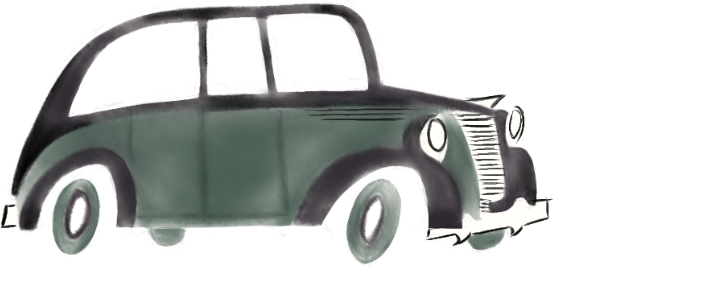
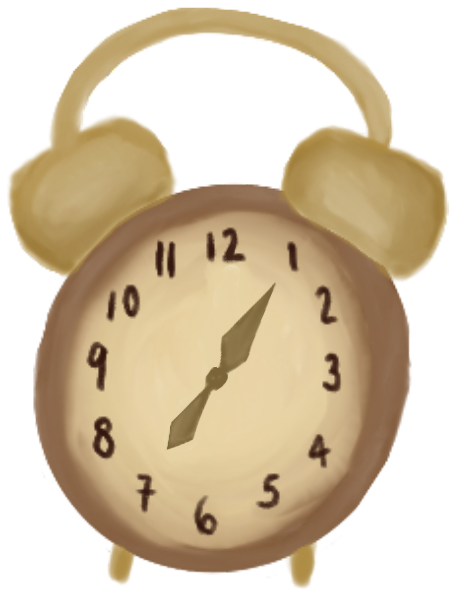
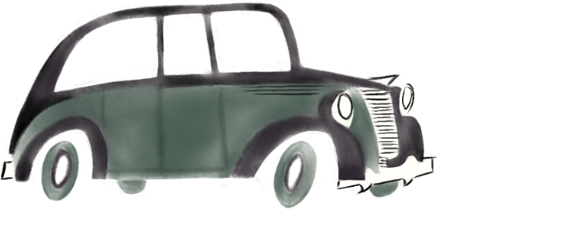
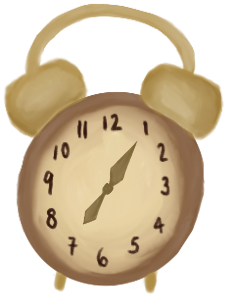
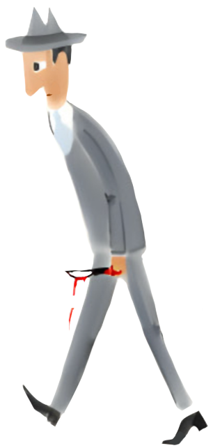
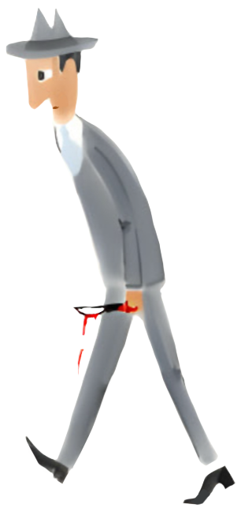
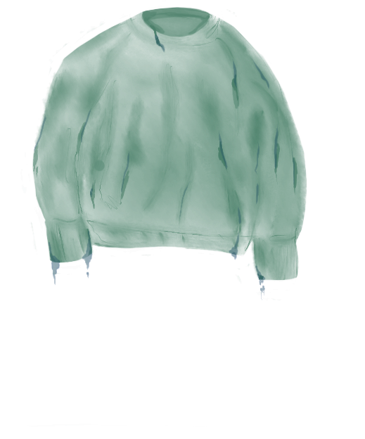
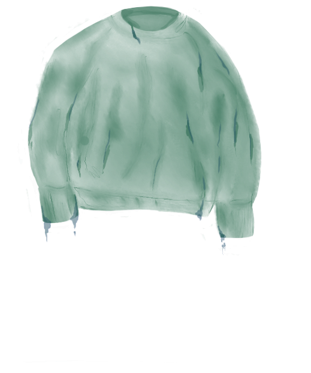

Publicada em 1957, “Crimes Exemplares” é um conjunto de 87 crimes fictícios revelados de forma cómica, absurda e direta, justificados pelos motivos mais absurdos e cometidos pelos objetos mais inesperados, entre os quais um compasso, meias e uma arca frigorífica. Torna-se, por isso, uma caixinha de pandora, e mais um dos numerosos casos onde não se deve dar por adquirido aquilo que ainda não foi descoberto.
Apesar da sua aparência mais comedida, Max Aub prendo-nos à sua escrita desde o primeiro momento; não pelo mistério, mas pela sua honestidade sarcástica, da qual se serve para expor a monotonia quotidiana, explorando as contradições e os impulsos irracionais humanos.


 





 



 
